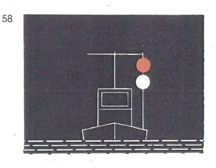
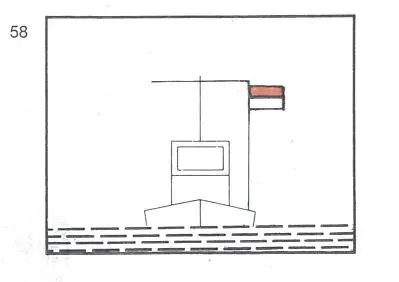

§ 3.29 Schutz gegen Wellenschlag (Anlage 3 Bild 58)
Rheinschiffahrtspolizeiverordnung
1. | In Fahrt befindliche oder stilliegende Fahrzeuge, Schwimmkörper und schwimmende Anlagen, die gegen Wellenschlag vorbeifahrender Fahrzeuge oder Schwimmkörper geschützt werden wollen, können außer ihrer Bezeichnung nach diesem Kapitel führen: | ||
- | bei Nacht: | ||
ein rotes gewöhnliches und ein weißes gewöhnliches Licht oder ein rotes helles und ein weißes helles Licht, das rote Licht etwa 1,00 m über dem weißen, an einer Stelle, an der sie gut gesehen und nicht mit anderen Lichtern verwechselt werden können; |  | ||
- | bei Tag: | ||
eine Flagge, deren obere Hälfte rot und deren untere Hälfte weiß ist, an einer geeigneten Stelle und so hoch, daß sie von allen Seiten sichtbar ist. Die Flagge kann durch zwei Flaggen übereinander, die obere rot, die untere weiß, ersetzt werden. Die Flaggen können durch Tafeln gleicher Farbe ersetzt werden. |  | ||
2. | Von der Bezeichnung nach Nummer 1 dürfen nur Gebrauch machen: | ||
a) | Fahrzeuge, Schwimmkörper und schwimmende Anlagen, die schwer beschädigt sind oder die sich an Rettungsarbeiten beteiligen sowie manövrierunfähige Fahrzeuge; | ||
b) | Fahrzeuge, Schwimmkörper und schwimmende Anlagen mit schriftlicher Erlaubnis der zuständigen Behörde. | ||
§ 3.25 bleibt unberührt. |